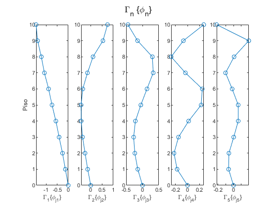
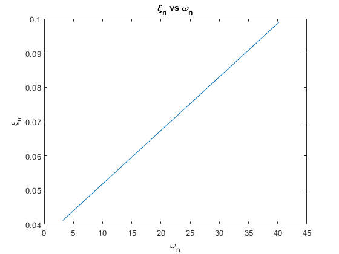

Tarea 5 Ingeniería Sísmica
Cristóbal Adasme - Alexis Contreras
Contents
Inicializar
clear variables close all clc
Pregunta 1
% Parámetros g = 980; % cm/s2 htotal = 40; % m Wtotal = 9000; %tonf cant_pisos = 10; % Cantidad de pisos h = htotal/cant_pisos; % Altura de cada piso W = Wtotal/cant_pisos; % tonf % Peso W k = 500; %tonf/cm Pisos = (cant_pisos:-1:1)'; Modos = (1:1:cant_pisos)'; k1 = 0.2*k; k2 = 0.2*k; k3 = 0.4*k; k4 = 0.4*k; k5 = 0.6*k; k6 = 0.6*k; k7 = 0.8*k; k8 = 0.8*k; k9 = k; k10 = k; m1 = 0.5*W/g; m2 = 0.8*W/g; m3 = W/g; m4 = W/g; m5 = W/g; m6 = W/g; m7 = W/g; m8 = W/g; m9 = W/g; m10 = 1.4*W/g; M = diag([m1 m2 m3 m4 m5 m6 m7 m8 m9 m10]); K = [k1 -k1 0 0 0 0 0 0 0 0; -k1 k2+k1 -k2 0 0 0 0 0 0 0; 0 -k2 k3+k2 -k3 0 0 0 0 0 0; 0 0 -k3 k4+k3 -k4 0 0 0 0 0; 0 0 0 -k4 k5+k4 -k5 0 0 0 0; 0 0 0 0 -k5 k6+k5 -k6 0 0 0; 0 0 0 0 0 -k6 k7+k6 -k7 0 0; 0 0 0 0 0 0 -k7 k8+k7 -k8 0; 0 0 0 0 0 0 0 -k8 k9+k8 -k9; 0 0 0 0 0 0 0 0 -k9 k10+k9]; G = [-m1; -m2; -m3; -m4; -m5; -m6; -m7; -m8; -m9; -m10]; r = diag(ones(cant_pisos)); disp('Matriz de masa [M]') disp(M) disp('Matriz de rigidez [K]') disp(K)
Matriz de masa [M]
Columns 1 through 7
0.4592 0 0 0 0 0 0
0 0.7347 0 0 0 0 0
0 0 0.9184 0 0 0 0
0 0 0 0.9184 0 0 0
0 0 0 0 0.9184 0 0
0 0 0 0 0 0.9184 0
0 0 0 0 0 0 0.9184
0 0 0 0 0 0 0
0 0 0 0 0 0 0
0 0 0 0 0 0 0
Columns 8 through 10
0 0 0
0 0 0
0 0 0
0 0 0
0 0 0
0 0 0
0 0 0
0.9184 0 0
0 0.9184 0
0 0 1.2857
Matriz de rigidez [K]
Columns 1 through 6
100 -100 0 0 0 0
-100 200 -100 0 0 0
0 -100 300 -200 0 0
0 0 -200 400 -200 0
0 0 0 -200 500 -300
0 0 0 0 -300 600
0 0 0 0 0 -300
0 0 0 0 0 0
0 0 0 0 0 0
0 0 0 0 0 0
Columns 7 through 10
0 0 0 0
0 0 0 0
0 0 0 0
0 0 0 0
0 0 0 0
-300 0 0 0
700 -400 0 0
-400 800 -400 0
0 -400 900 -500
0 0 -500 1000
P1 a)
[Phi, lambda] = eig(K,M); % Problema de valores y vectores propios wn = diag(lambda.^0.5); % Frecuencia de cada modo Tn = 2*pi./wn; % Periodo de cada modo tabla = table(); tabla.Modo_n = Modos; tabla.Periodos_Tn = Tn; tabla.FreqAngular_wn = wn; disp(tabla) clear tabla
Modo_n Periodos_Tn FreqAngular_wn
______ ___________ ______________
1 1.988 3.1606
2 0.81474 7.7119
3 0.52376 11.996
4 0.38083 16.499
5 0.308 20.4
6 0.27795 22.606
7 0.24313 25.843
8 0.2063 30.456
9 0.18036 34.838
10 0.15614 40.24
P1 b)
Caluclar factores de participación modal Gamma_n y las formas modales {Phi_n} Graficar Gamma_n{Phi_n} para los primeros 5 primeros modos
Mn = diag(Phi.'*M*Phi); Kn = diag(Phi.'*K*Phi); Mn_matrix = Phi.'*M*Phi; Kn_matrix = Phi.'*K*Phi; % Gamma_n Gamma_n = -Phi.'*M*r./Mn; % Comentarios tabla = table(Modos,Gamma_n); disp(tabla) clear tabla % Graficamos cant_modos = 5; figure for i = 1:cant_modos subplot(1,cant_modos,i) plot([Gamma_n(i)*Phi(:,i); 0],[Pisos; 0], '-o') xlabel(['\Gamma_', num2str(Modos(i)), '\{\phi_{j', num2str(Modos(i)), '}\}']) if i == 1 ylabel('Piso') hold on end end hold off sgtitle('\Gamma_n \{\phi_n\}')
Modos Gamma_n
_____ _________
1 -2.5715
2 -1.0725
3 -0.70653
4 0.56486
5 -0.2755
6 0.37333
7 -0.21916
8 0.17987
9 0.14934
10 -0.095834
 P1 c)
Calcular Masa modal Equivalente y determine el número de modos necesario para que la suma de la masa modal equivalente sea al menos un 90% de la masa total del edificio
Mn_ast = zeros(cant_pisos,1); for n = 1:cant_pisos for j = 1:cant_pisos Mn_ast(n,1) = Mn(n,1) + M(j,j)*Gamma_n(n)*Phi(j,n); end end PMass = Mn_ast/(Wtotal/g); % Porcentaje de Masa modal Equivalente de cada modo PMass_acum = zeros(cant_pisos,1); % Porcentaje de Masa modal equivalente acumulado PMass_acum(1,1) = PMass(1,1); printed = 0; % Contador para ver si ya encontró la solución for i = 2:cant_pisos PMass_acum(i,1) = PMass_acum(i-1,1) + PMass(i,1); if PMass_acum(i,1) > 0.9 && printed ~= 1 fprintf('Solo se requieren los primeros %i modos \n \n', Modos(i,1)) printed = 1; end end % Comentarios tabla = table(); tabla.Modos = Modos; tabla.MasaModalEquivalente = Mn_ast; tabla.PorcntajeDeMasa = PMass; tabla.PorcntajeDeMasaAcum = PMass_acum; disp(tabla) clear tabla % Para verificar % Sum(Mn_Ast) = Sum_m
Solo se requieren los primeros 10 modos
Modos MasaModalEquivalente PorcntajeDeMasa PorcntajeDeMasaAcum
_____ ____________________ _______________ ___________________
1 0.83014 0.090394 0.090394
2 0.82408 0.089733 0.18013
3 0.81527 0.088774 0.2689
4 0.77667 0.08457 0.35347
5 0.91878 0.10004 0.45352
6 0.81685 0.088946 0.54246
7 0.91751 0.099907 0.64237
8 0.92283 0.10049 0.74285
9 0.9304 0.10131 0.84416
10 0.96176 0.10472 0.94889
P1 d)
Amortiguamiento del primer modo utilizando fórmula propuesta por Cruz & Miranda (2021)
xi = zeros(cant_pisos,1);
% Para el primer modo
xi(1,1) = 0.28*htotal^(-0.52);
P1 e
Amortiguamiento para los modos superiores utilizando fórmula propuesta por Cruz & Miranda (2017)
for i = 2:cant_pisos xi(i,1) = xi(1,1)*(1+0.12*(wn(i,1)/wn(1,1)-1)); end
P1 f
Graficar xi_n vs wn
figure plot(wn,xi) xlabel('\omega_n') ylabel('\xi_n') title('\xi_n vs \omega_n') % Da una recta como es de esperar viendo la ecuación de xi para modos % superiores % figure % plot(Modos,xi) % xlabel('Modos') % ylabel('\xi_n')
Pregunta 2
P2 a)
Import(registro maule)
% Sd1 para Tn = 0.01:0.01:6, para xi = xi_1 % PSa1 = wn1^2*Sd1 % plot(Tn,Psa1)
P2 b)
Ce1 = PSa/g